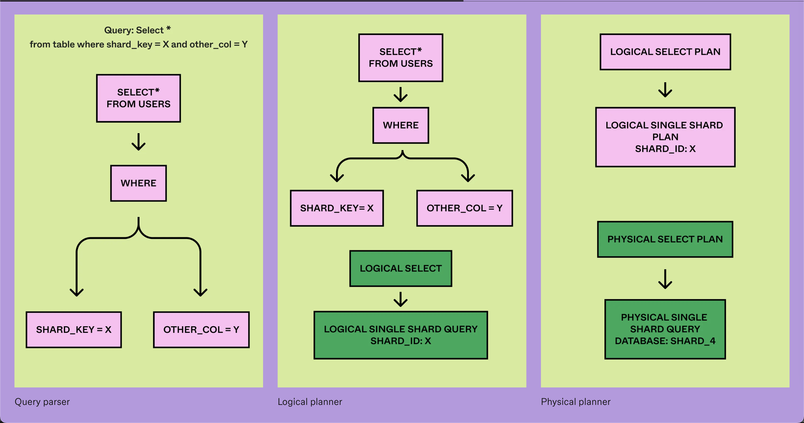
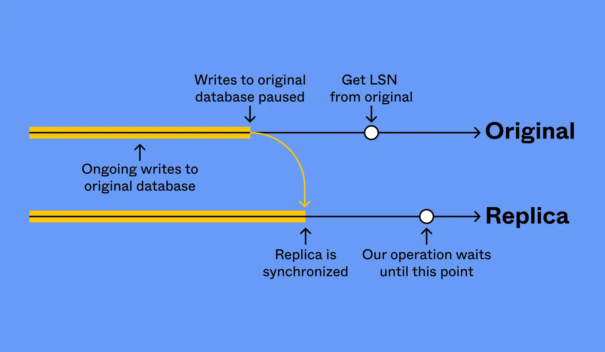
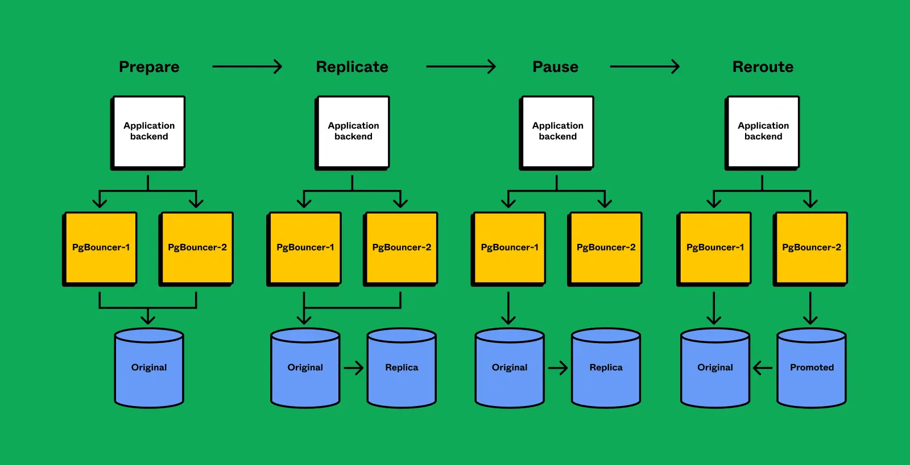

Sammy Steele ssteele@figma.com is currently the Senior Staff Engineer and Tech Lead for Figma’s Databases Team.
- Worked at Dropbox before.
- Was part of the 5 person team that built Dropbox’s petabyte scale search system - Nautilus.
Dropbox operated data-centers on-prem since managed cloud services weren’t as good yet.
Dropbox stored petabyte scale metadata and exabyte scale file data. In 2013, the metadata was stored in horizontally sharded MySQL w/ 2000 shards.
They were outgrowing this system. A single organization (MIT) was going to outgrow a single database which their system didn’t account for.
Beyond Sharded SQL
- They ended up building their own Spanner-inspired distributed key-value store in-house (called Panda) since no open-source solutions were scaling to their usage. One org could now be split multiple times to get smaller shard ranges.
- (Project Theseus) Hardest part of the project wasn’t building Panda but running the migration to re-build the entire metadata stack on top of Panda with zero downtime. It took 3 years and a team of 20 engineers.
- Implemented atomic cross-shard txns. (2PC) across MySQL and Panda to enable the migration. Increased %age rollout of cross-shard txns. over time and eventually swapped reads from the legacy system.
Joined Figma at a time when they were just in the process of scaling out their databases. Back in 2022, Figma was on a single RDS instance. DB Traffic was growing 3x every single year for the last 4 years.
Build vs. Buy for Database Scalability
- Sammy was pretty anti-build after Dropbox where everything was in-house. While building new systems in fun as an infra engineer, someone has to keep maintaining the system.
- Figma was operating on extremely tight time horizons with a small team and 6 months of runway (before the system grew out of scale).
- Why not NoSQL?
- NoSQL does really well at scale but Figma relied a lot on joins, unique indexes and complicated relational models.
- Would have to rewrite the entire system from scratch to use a NoSQL DB.
- Spent 3 months exploring a NewSQL solution (like Cockroach, Vitess or Spanner) but couldn’t get it to work at their scale.
- Team had a lot of expertise and historical context in RDS Postgres. Needed an incremental migration path to deliver value fast.
- Built in-house horizontally shared-system on top of RDS Postgres.
Logical vs. Physical Sharding
- A physical shard could have multiple logical shards.
- Can logically shard in-place w/ no data movement by using a virtual database layer.
- Benefits of logical sharding:
- Incremental %age based rollouts
- Can use logical shards for reads but let the writes go to the un-sharded database
- Low-risk fallback path
- De-risk latency availability, correctness before physical sharding
- All query, txn. logic, application changes that happen with horizontal sharding would already be running in production through the virtual shards.
- Incremental %age based rollouts
Figma doesn’t use micro-services. They’ve a few large services including a service in Go that powers the real-time feature and a no. of Ruby services including a large Ruby monolith.
DBProxy
- They already run a slightly modified version of pgBouncer as their database proxy. DBProxy is a Go service that sits b/w application and pgBouncer layers.
- “Brains” of horizontal sharding. Application doesn’t need to know how the backend is actually sharded beyond including a shard key in queries.
- Also enables load-shedding, improved observability, replica hedging etc.
- If a replica goes down, then the request is sent to multiple replicas and returns when the first one succeeds.
- Most critical routes only talk to replicas. Very few of them issue reads.
- Lightweight query engine at its core.
- Query parser taken from CockroachDB and it has worked well for them. Logical and physical planner was built in-house.

- (Scatter Gather query) When a shard key isn’t specified, DBProxy aggregates the results from all the shards.
Query Language
- All single-shard queries are allowed.
- No nested SQL queries.
- Multi-shard writes, aggregation and group-bys are allowed but discouraged.
- Joins are allowed iff the join is on the sharding key.
Physical Sharding Operation
- Built in-house.
- Uses Postgres Logical Replication to sync state.
- Replica failovers are a no-downtime operation.
- Primary failovers take ~10s of downtime during the critical section (In comparison, AWS RDS may take anywhere from minutes to half an hour for major upgrades).

- Multi-step state machine w/ automatic rollback and recovery
- Disable reads at pgBouncer (PGB) layer
- Revoke permissions from source RDS
- Kill active queries
- Since revoking permissions doesn’t stop in-flight queries
- Wait for replication sync
- Reverse logical replication
- Was logically replicating from old to new. Now replicating from source back to destination (for rollback).
- Re-route pgBouncer instances to point to target
- Re-enable permissions on target RDS
- Re-enable pgBouncer
- Core failover operation enables vertical partitoning, horizontal shard-splits and major pg version upgrades.

Lessons Learned
- You can get a long way on one database… Until you can’t
- Figma was on a single pg instance from 2012 to 2020 w/o connection pooling or replicas.
- Very few companies hit the scale where vanilla pg stops working.
- Don’t be afraid to cross abstraction boundaries
- Engineers often get stuck behind abstractions.
- If something isn’t working, go read the code yourself. Applies to orgs too. Go talk to product engineers, read product code and review product designs.
- For example, we had issues with Postgres vacuuming. Txn. wrap-around occurred regularly since pg uses a 32-bit integer for txn ids (i.e. 2^32 ~ 4 billion txn. ids). Vacuuming is very expensive and they observed that their servers would hit 100% CPU at the end of a vacuum. They had to read the pg source code to understand why this was happening and find a workaround. (There was a single lock that’s being contended on that read the entire file system into memory because query plans have been invalidated at the very end of a vacuum or analyze operation.)
- Data migrations are scary, so work twice as hard to make them safe.
- Do data migrations with the gradual, %age based rollouts and have the ability to rollback from unknowns.
- Know your customers and product
- Understand how infra tradeoffs map to your organization’s priorities and ensure they align.
- The databases team had to become experts in Figma’s product to ship horizontal sharding.
- DBProxy does txns. by creating them on every database, issue a SELECT before commit to ensure that the DBs are still alive and then you commit in parallel. There is a span of 5ms where the DB could die and you could have a partial commit failure. At their commit volume, it’d only happen 2-3 times a year so it wasn’t a problem to worry about except for some critical txns. which were fixed.
- Certain early company decisions are very hard to walk back
- Your data model, your ORM, and your consistency model are extremely hard to change.
- At Dropbox, they had perfect consistency from day one and folks got used to that. Part of why the project took 3 years was that we couldn’t take that guarantee away from customers and had to keep giving them perfect atomic cross-shard txns.
- At Figma, they gave replicas with nothing but a stale reads guarantee so all the product code was written to deal with that from day one.
- There is implicit tension b/w the goal of building products fast in a company’s early days vs. needing to care about scale and reliability once you’re successful. Choose your battles wisely.
- Your data model, your ORM, and your consistency model are extremely hard to change.
- Centralized on less technologies done well
- Golden paths enables small infra teams to support large product orgs
- Optimize for the good of the company over individual team’s desires
- More technologies add complexity, reduces reliability and increases developer costs
- Don’t gate-keep if you’re blocking the core business
References